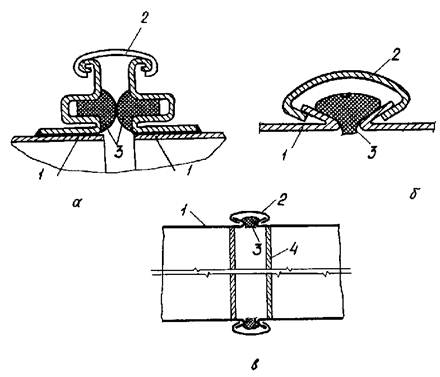
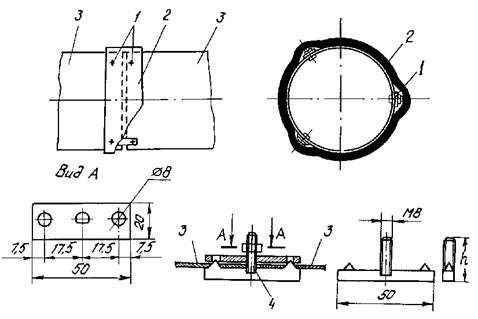
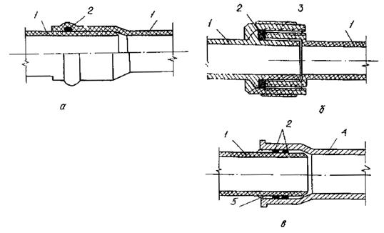
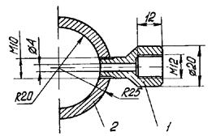

МИНИСТЕРСТВО
МОНТАЖНЫХ И СПЕЦИАЛЬНЫХ
СТРОИТЕЛЬНЫХ РАБОТ СССР
УТВЕРЖДАЮ:
Заместитель министра
монтажных и специальных
строительных работ СССР
К. К. Липодат
2 января 1985 г.
ИНСТРУКЦИЯ
ПО ГЕРМЕТИЗАЦИИ ВЕНТИЛЯЦИОННЫХ
И САНИТАРНО-ТЕХНИЧЕСКИХ СИСТЕМ
ВСН 279-85
Минмонтажспецстрой СССР
Центральное бюро научно-технической информации
Москва - 1985
Инструкция разработана Всесоюзным научно-исследовательским институтом гидромеханизации, санитарно-технических и специальных строительных работ (ВНИИГС) совместно с ГПИ Проектпромвентиляция в соответствии с техническим заданием, утвержденным ГТУ Минмонтажспецстроя СССР 22.11.82, и является практическим руководством.
При разработке инструкции были использованы и учтены требования нормативных документов: СНиП 1.01.01-82, СНиП 1.01.02-83, СНиП 1.01.03-83, СНиП III-28-75, СНиП III-4-80, СНиП III-29-76, СНиП II-30-76, СНиП II-36-73, СНиП II-34-76, СНиП II-33-75 и «Инструкции по технологии монтажа воздуховодов с нефланцевыми конструкциями стыков» ВСН-182-82.
С введением в действие настоящей инструкции утрачивают силу «Указания по применению фторопластовых уплотнительных материалов в санитарной технике» ВСН 279-71/Минмонтажспецстрой СССР
Составители: канд. техн. наук С.А. Фихтман, инженеры Л.Н. Ковальчук и А.С. Галета (ВНИИГС); соисполнители по разделу 1: В.Я. Меклер и А.С. Галето (ГПИ Проектпромвентиляция).
|
Министерство монтажных и специальных строительных работ СССР (Минмонтажспецстрой СССР) |
Ведомственные строительные нормы |
ВСН 279-85 |
|
Минмонтажспецстрой СССР |
||
|
Инструкция по герметизации соединений вентиляционных и санитарно-технических систем |
Взамен ВСН 279-71 |
|
|
Минмонтажспецстрой СССР |
Настоящая инструкция распространяется на работы по применению различных уплотняющих материалов для герметизации разъемных соединений стальных воздуховодов круглого и прямоугольного сечений систем вентиляции и кондиционирования воздуха, соединений трубопроводов внутренних систем холодного и горячего водоснабжения, отопления и канализации, монтируемых на объектах промышленного и гражданского строительства, а также на указанные работы при сборке укрупненных узлов воздуховодов и санитарно-технических трубопроводов, выполняемые на заготовительных предприятиях Минмонтажспецстроя СССР.
1.1. В настоящем разделе рассматриваются следующие виды соединений стальных вентиляционных воздуховодов круглого и прямоугольного сечений: фланцевые, бандажные соединения воздуховодов круглого сечения и реечные соединения воздуховодов прямоугольного сечения.
Кроме указанных, инструкция распространяется на производство работ по герметизации специального вида соединений воздуховодов круглого сечения с помощью фиксирующих элементов и ленты «Герлен», а также на производство работ по герметизации воздуховодов, требующих повышенной степени плотности.
Примечание. Включение специальных видов соединений и дополнительных работ по повышению плотности воздуховодов в проектную документацию должно быть обосновано технико-экономическим расчетом.
1.2. Работы по монтажу систем вентиляции, кондиционирования воздуха, аспирации и пневмотранспорта следует начинать по окончании организационно-технической подготовки производства в соответствии с требованиями СНиП III-1-76, СНиП III-28-75 и СНиП III-4-80.
|
Внесены Всесоюзным научно-исследовательским институтом гидромеханизации, санитарно-технических и специальных строительных работ, ГПИ Проектпромвентиляция |
Утверждены Минмонтажспецстроем СССР "2" января 1985 г. |
Срок введения в действие "1" июля 1985 г. |
1.3. Сортамент герметизирующих материалов должен соответствовать указанному в проектной документации. Замена сортамента допускается только по согласованию с организацией - разработчиком проекта.
1.4. Наиболее широкое применение имеют круглые и прямоугольные фланцы СТД 201 и СТД 202, изготовляемые по ТУ 36-1508-75.
Круглые фланцы изготовляют диаметром 100-2000 мм, прямоугольные - 100х150-1600х2000 мм. Герметизация фланцевых соединений должна обеспечивать их плотность. Герметизирующие прокладочные материалы в зависимости от характеристики перемещаемой среды приведены в приложении 1.
1.5. Прокладки между фланцами не должны выступать внутрь воздуховодов.
1.6. Прокладки из пористой резины, монолитной или асбестового картона изготовляют на месте монтажа или в мастерских, вырезая из листа кольцо или прямоугольник соответствующего размера. В прокладках пробивают отверстия для болтов и укладывают на плоскость фланца. Плоскость фланца должна быть ровной, без заусенцев и очищена от ржавчины.
1.7. Ленту ПМЖ-2 укладывают на плоскость фланца, а затем делают в ней проколы для болтов.
1.8. Прокладки из профилированной резиновой ленты укладывают на плоскость фланца и в ее тонкой части делают отверстия для болтов. При соединении круглых фланцев диаметром менее 200 мм необходимо вырезать сегменты для лучшего прилегания прокладки к плоскости фланца.
1.9. Для изготовления прокладок из асбестовых шнуровых материалов от шнура отрезают кусок необходимой длины (в зависимости от периметра фланца) и укладывают его на плоскость фланца. Болты пропускают через шнур так, чтобы нити шнура огибали болт с обеих сторон.
1.10. Болты во фланцевых соединениях необходимо затягивать до отказа. Затяжку болтов производить равномерно, затягивая одновременно болты, расположенные противоположно относительно оси воздуховода.
1.11. Гайки болтов необходимо располагать с одной стороны фланца. При установке болтов вертикально гайки предпочтительно располагать с нижней стороны соединения.
1.12. Наиболее широкое применение для круглых воздуховодов имеют бандажи СТД 527А и СТД 134А, изготовляемые по ТУ 36-2050-77. Бандажи СТД 527А предназначены для соединения воздуховодов диаметром 100-180 мм включительно, бандажи СТД 134А - для воздуховодов диаметром 200-900 мм включительно. Бандажи изготовляют из стальной ленты 0,8 КП-М-НТЗ-С по ГОСТ 503-81 толщиной 0,8-1,5 мм и покрывают грунтовкой ГФ-021 по ГОСТ 25129-82. Продольные и спиральные фланцевые швы воздуховодов должны быть закреплены на торцах (в местах расположения бандажей) точечной сваркой.
1.13. Бандажи устанавливают на отбортовку соединяемых воздуховодов.
1.14. Бандажи не должны иметь искривлений, вмятин, поперечных и продольных трещин и других дефектов, снижающих их эксплуатационные качества.
1.15. Для обеспечения герметичности соединения бандажи с внутренней стороны заполняют герметизирующей мастикой «Бутэпрол».
1.16. Герметизирующая нетвердеющая мастика «Бутэпрол» выпускается промышленностью по ТУ-21-29-45-76 и представляет собой однородную массу, изготовляемую на основе бутилкаучука, этиленпропиленового каучука, наполнителей и пластификаторов. Мастика поставляется в упакованных в полиэтиленовую пленку брикетах массой 1,5-2 кг. Срок хранения - 1 год со дня изготовления.
1.17. При нанесении мастику необходимо нагреть для придания ей вязких свойств (до 50 °С). Нагрев герметика и заполнение им бандажа выполняют с помощью механизма СТД 449 (ТУ 36 2416-81).
1.18. Мастика сохраняет свои герметизирующие свойства при температуре от -50 до +70 °С.
1.19. Бандажи с предварительно нанесенной мастикой "Бутэпрол" должны быть использованы в срок, не превышающий 12 мес.
Расход мастики на одно бандажное соединение в зависимости от диаметра воздуховода приведен в приложении 2.
1.20. Бесфланцевые соединения металлических воздуховодов прямоугольного сечения из унифицированных деталей, изготовляемых по ТУ 36-736-78 в соответствии с ВСН 353-75, выполняют с помощью шин и реек, изготовляемых по ТУ 36-2314-80.
Примечание. Реечные соединения участков воздуховодов прямоугольного сечения могут быть выполнены с применением реек других конструкций (Z и С-образной формы), а также без шин. В последнем случае рейки устанавливают на отбортованные концы воздуховодов.
1.21. Шины и рейки изготовляются в заводских условиях и на монтажную площадку поставляются партиями по заданным размерам. Шины могут быть поставлены также установленными на воздуховодах и закрепленными любым способом (защелочное соединение, прихватка сваркой, соединение на заклепках или самонарезающих винтах и др.).
1.22. Для герметизации реечных соединений применяют профилированную резиновую прокладку Т-образной формы, изготовляемую из резины по ТУ 38-105259-71. Резиновую прокладку устанавливают в ручье шин (приложение 3,а).
1.23. Сборку участков воздуховодов в укрупненные блоки производят при предварительно установленных резиновых прокладках в ручье шин. Совмещение шин между собой и обеспечение соосности соединяемых воздуховодов выполняют с помощью оправки, вставляемой в отверстие монтажных угольников. Затем шины на одной из сторон стягивают фиксаторными клещами и на них на длину 10-15 мм надвигают рейку, после чего легкими ударами молотка через деревянную прокладку рейку забивают на всю длину. Соединительные рейки устанавливают сначала на вертикальных сторонах воздуховодов, а затем горизонтальных. При этом обеспечивается плотное прижатие резиновых прокладок между собой и герметичность соединения.
1.24. При установке реек на отбортованные концы воздуховодов профилированную резиновую прокладку устанавливают между торцами (приложение 3,б), после чего воздуховоды соединяют рейками, забиваемыми легкими ударами молотка.
1.25. При соединении прямоугольных воздуховодов с помощью Z-и С-образных реек (без применения резиновых прокладок) в целях герметизации стык снаружи должен быть промазан густотертой краской или разогретой до 50 °С мастикой «Бутэпрол» (приложение 3,в).
Масляные и алкидные густотертые краски (ГОСТ 695-77) выпускаются нескольких марок: МА-021, МА-025, ГФ-023 и ПФ-024. Краски готовы к употреблению и поступают разведенными олифой до требуемой консистенции. Перед употреблением их необходимо перемешать до образования однородной массы. Краска наносится и уплотняется шпателем. Время высыхания готовой краски не более 12 ч. Расход краски составляет 0,008-0,010 кг на 1 м2 воздуховода.
1.26. Максимальная длина укрупненных блоков прямоугольных воздуховодов, монтируемых горизонтально и соединяемых на шинах и рейках, зависит от схемы расположения захватов и составляет 6-12 м. В случае применения специальных траверс длина блоков может быть увеличена до 15 м в зависимости от конструкции траверсы. Вертикальные воздуховоды монтируют укрупненными блоками в пределах 1-2 этажей здания.
1.27. В конструкциях бесфланцевых соединений воздуховодов с лентой «Герлен» прочность и жесткость стыков обеспечивается с помощью фиксирующих элементов, а плотность - с помощью герметизирующей ленты.
1.28. Фиксирующий элемент состоит из верхней и нижней планок, шпильки и гайки. К нижней планке приваривается шпилька. Металл воздуховодов помещается между нижней и верхней планками. При затягивании гайки иглоконусные выступы нижней пластины входят в отверстия верхней, прокалывая металл и осуществляя жесткое соединение воздуховодов. На воздуховоде по окружности устанавливаются три фиксатора под углом 120°. Чертеж конструкции иглоконусного фиксирующего элемента приведен в приложении 4.
1.29. Указанными фиксирующими элементами могут быть соединены воздуховоды спирально-сварной и спирально-замковой конструкции диаметром до 30 мм с гладкими торцами.
Воздуховоды прямошовной конструкции с целью обеспечения их жесткости и формоустойчивости в процессе транспортировки и монтажа на расстоянии 60 мм от концов должны иметь двойной зиг.
1.30. Для уплотнения зазора, образуемого между концами воздуховодов, используется герметизирующая лента «Герлен», получаемая на основе невулканизированных бутилкаучуков. Ленту «Герлен» промышленность выпускает по ТУ 400-1-165-79. При изготовлении герметизирующую ленту закатывают вместе с прокладочным материалом (силиконизированной бумагой) в рулоны на картонные втулки.
1.31. Выпускается две разновидности герметизирующей ленты «Герлен»: недублированная (типа «Герлен») и дублированная нетканным материалом (типа «Герлен-Д»). Для выполнения рекомендуемых соединений следует использовать ленту «Герлен-Д».
Герметизирующая лента выпускается следующих размеров: длина 12 м, ширина 80, 100, 120 и 200 мм; толщина 3 мм.
1.32. Рекомендуется применять следующую ширину полосы ленты для соединения воздуховодов: 80 мм - при диаметре до 400 мм, 100-120 мм - диаметром свыше 400 мм.
1.33. При использовании герметизирующей ленты «Герлен-Д» температура транспортируемого воздуха не должна превышать +40 °С (кратковременно разрешается до +60 °С) и не должна быть ниже -30 °С.
1.34. При использовании герметизирующей ленты «Герлен» необходима предварительная очистка поверхности воздуховода от загрязнений, пыли и ржавчины. Для этого используют металлические и волосяные щетки и ветошь. Герметизируемая поверхность должна быть сухой.
1.35. Прочное сцепление ленты «Герлен» с металлом обеспечивается при положительной температуре (оптимальная температура от 9 до 25 °С) и относительной влажности 50-70 %.
1.36. При нанесении герметика на сильно нагретые поверхности (при работе на солнце и т.п.) требуемая адгезия может быть не обеспечена из-за возможной вулканизации герметика со стороны поверхности.
1.37. При наклеивании ленты рекомендуется соблюдать следующие технологические приемы. Край ленты освобождают от защитной силиконизированной бумаги на длину 20-30 мм, ленту приклеивают в месте стыка внахлест со свободным краем.
При наклеивании ленту запрещается вытягивать. Наклеивать и прикатывать ленту (вручную или резиновым валиком от центра к краям в поперечном направлении) следует так, чтобы поверхность ленты была ровной, без складок, вздутий и воздушных пузырей. Лента должна быть плотно и без пропусков приклеена на все неровности.
1.38. При работе по герметизации стыков лентой «Герлен» необходимо осуществлять пооперационную проверку:
соответствия времени применения герметизирующей ленты ее жизнеспособности;
качества подготовки поверхности (степень ее очистки);
качества приклеивания ленты.
1.39. Крепление подвесок и растяжек непосредственно к фиксирующим элементам не допускается.
1.40. При соединении воздуховодов с помощью ленты «Герлен» производят следующие работы:
размечают места установки фиксирующих элементов;
соблюдая соосность собираемых воздуховодов, устанавливают фиксирующие элементы и жестко закрепляют их с помощью монтажных болтов;
производят уплотнение стыка путем наклеивания герметизирующей ленты;
устанавливают хомуты и другие средства крепления воздуховодов.
1.41. Степень неплотностей в воздуховодах и других элементах вентиляционных систем определяется по величине подсоса или утечки воздуха, выявляемой при предпусковых испытаниях. Допустимая величина подсоса или утечки воздуха зависит от протяженности вентиляционной сети, производительности вентилятора и регламентируется СНиП III-28-75.
1.42. Монтаж вентиляционных систем, требующих повышенной степени плотности и выполняемый в зданиях специального назначения (уникальные здания и сооружения, здания и помещения, предназначенные для работ с радиоактивными веществами и другими источниками ионизирующих излучений, здания, в которых производятся, хранятся или применяются пожароопасные или взрывчатые вещества и другие), должен производиться по особым указаниям проекта, определяющим способы герметизации соединений и швов воздуховодов. Уплотнение соединений воздуховодов (фланцевых, бандажных, реечных и др.) должно выполняться в строгом соответствии с проектом и указаниями настоящей инструкции.
1.43. При монтаже фланцевых соединений особое внимание должно быть обращено на качество плоскости фланцев (отсутствие выступов, выпуклостей, выбоин, заусенцев, ржавчины), соответствие проекту качества уплотнительных и прокладочных материалов и изделий. Плоскость фланцевого соединения должна быть строго перпендикулярна оси воздуховода.
1.44. При монтаже бандажных соединений особое внимание необходимо обращать на равномерность отбортовки торца воздуховода или зигов, полноту заполнения внутренней полости бандажа уплотнительным материалом и степень затяжки бандажа. Отбортовка и бандаж не должны иметь деформаций, превышающих допускаемые нормы; бандаж должен плотно обхватывать воздуховод.
1.45. При сборке реечных соединений шины и рейки не должны иметь деформаций, превышающих допускаемые нормы; шины должны быть плотно укреплены на воздуховодах (отсутствие сквозных зазоров), а рейки - плотно обхватывать шины или отбортовку. Профилированная резиновая прокладка должна плотно входить в ручей шины; высота выступающей части прокладки в торце воздуховода должна быть одинаковой по всему периметру соединения.
1.46. При сборке специального вида соединения (с герметизирующей лентой «Герлен») необходимо особенно тщательно очистить поверхность воздуховодов, на которую накладывается лента, от ржавчины и масляных пятен. Это обеспечивает высокую плотность прилегания мастичного состава к металлу.
1.47. Значительные утечки и подсосы воздуха возможны через сквозные зазоры в соединениях воздуховодов, монтируемых без применения прокладочных и уплотнительных материалов, в телескопических соединениях круглых воздуховодов на заклепках или самонарезающих шурупах, планочных или планочно-реечных соединениях прямоугольных воздуховодов, а также через неплотности швов воздуховодов (фальцевых, замковых, сварных). Для герметизации указанных зазоров и неплотностей путем наружной промазки рекомендуются один из следующих составов: герметизирующая паста УН-01, полиуретановые клеи «Стык-3-8» или «КИП-Д», мастика «Бутэпрол». Характеристика герметизирующих составов приведена в приложении 5.
1.50. Полиуретановый клей «КИП-Д» выпускается промышленностью по ТУ 6-01-1010-78, фасуется в герметичные оцинкованные фляги по ГОСТ 5799-78. Разгерметизированный клей должен быть использован в течение 6 ч. Для ускорения отверждения клея в него может быть введен катализатор УП-606/2 по ТУ 6-09-4135-75 в количестве 0,5 % по массе; жизнеспособность клея с добавкой катализатора составляет 1,5 ч.
1.51. Паста УН-01, клей «Стык-3-8» или «КИП-Д», так же как мастика «Бутэпрол» (см. пп. 1.48 и 1.49 настоящей инструкции), наносятся на металлическую поверхность шпателем. Для придания вязких свойств герметизирующие составы необходимо нагреть до температуры 40-50 °С. Перед нанесением герметиков металлические поверхности должны быть тщательно очищены от ржавчины, окалины, пыли, жировых и других загрязнений.
1.52. Проверка качества работ по герметизации соединений воздуховодов включает в себя пооперационный контроль: качества изготовления соединительных частей (фланцев, бандажей, реек и т.п.), соблюдения соосности и параллельности торцов соединяемых частей, правильности укладки уплотнительных материалов, равномерности затяжки болтов, соответствия сортамента и качества применяемых герметизирующих материалов, срока их годности, качества подготовки металлических поверхностей к нанесению уплотнительных материалов и др.
Таблица 1
|
Контролируемый показатель |
Требуемое качество |
Способ контроля |
|
|
Очистка поверхности металла перед герметизацией |
Чистота поверхности металла после механической очистки |
Отсутствие ржавчины, окалины и других отложений |
Визуальный осмотр |
|
Чистота поверхности металла после химической очистки |
Отсутствие масляных и других жировых загрязнений |
Протирка чистой тканью (отсутствие жировых пятен на ткани) |
|
|
Приготовление герметизирующего состава |
Наличие требуемых компонентов |
В соответствии с ТУ и настоящей инструкцией |
- |
|
Срок хранения компонентов |
Непросроченный срок хранения |
По документации |
|
|
Соотношение компонентов в составе |
В соответствии с настоящей инструкцией |
Взвешивание |
|
|
Нанесение герметизирующего состава |
Толщина слоя |
В соответствии с настоящей инструкцией |
Визуально |
|
Консистенция состава |
Опытным путем (отсутствие густоты либо растекания) |
||
|
Время выдержки |
Измерение времени |
||
|
Температура выдержки |
Измерение температуры окружающей среды |
||
|
Герметизация соединения (операция в целом) |
Плотность соединения |
Отсутствие утечек (присосов) воздуха |
Испытание вентиляционной системы на плотность |
1.53. Для обеспечения требуемого качества герметизации зазоров в швах реечных соединений и других местах воздуховодов путем поверхностного нанесения герметиков, а также для соблюдения установленных технологических режимов при производстве работ необходимо контролировать:
качество очистки поверхности воздуховода перед герметизацией;
качество герметизирующего состава и его нанесение на поверхность;
плотность прилегания герметизирующих составов к поверхности воздуховода.
Схема операционного контроля поверхностной герметизации воздуховодов приведена в табл. 1.
1.54. По истечении срока хранения уплотнительных материалов, изделий и герметизирующих составов их можно применять только после проверки на соответствие требованиям технических условий и настоящей инструкции. При условии соответствия могут быть использованы потребителем.
1.55. При производстве вентиляционных работ с герметизирующими материалами необходимо выполнять требования: разделов 2, 4, 12 и 14 СНиП III-А.11-70; правил пожарной безопасности при производстве строительно-монтажных работ, утвержденных ГУПО МВД СССР, санитарных норм, а также требования настоящей инструкции.
1.56. При выполнении работ по герметизации рабочие должны быть обучены безопасным приемам выполнения работ и проинструктированы по технике безопасности.
1.57. При работе с мастичными составами, клеями, густотертыми красками, лентой «Герлен», применяемыми для герметизации соединений и швов воздуховодов, необходимо пользоваться резиновыми перчатками. При длительной работе с герметизирующей лентой «Герлен» под резиновые перчатки следует надевать хлопчатобумажные.
1.58. Рабочие, выполняющие работы по герметизации, должны быть обеспечены помещениями в соответствии с существующими санитарными нормами.
Предельно допустимые концентрации (ПДК) вредных веществ, содержащихся в составах, применяемых для очистки металлических поверхностей, приведены в приложении 6.
2.1. Настоящий раздел инструкции предназначен для руководства при герметизации разъемных соединений (фланцевых, резьбовых, раструбных) внутренних систем холодного и горячего водоснабжения, систем водяного и парового отопления и канализационных систем из чугунных и полиэтиленовых труб.
2.2. Изготовление и монтаж трубопроводов указанных систем должен выполняться согласно СНиП III-28-75, СНиП II-30-76, СНиП II-34-76 и СН 478-80.
2.3. Работы по сборке и герметизации соединений могут производиться как в условиях заготовительных производств, так и в условиях монтажной площадки.
2.4. Внутренние водопроводные сети холодного и горячего водоснабжения и систем водяного или парового отопления изготовляются из труб стальных водогазопроводных по ГОСТ 3262-75 и труб стальных электросварных по ГОСТ 10704-76, ГОСТ 10705-80 и ГОСТ 8732-78.
2.5. Разъемные соединения стальных труб производят с помощью фланцев с соединительным выступом по ГОСТ 12820-80 или на резьбе.
Соединительные части должны соответствовать требованиям ГОСТ 8966-75, ГОСТ 8954-75, ГОСТ 8968-75, ГОСТ 8969-75, ГОСТ 8960-75 и должны иметь в торцах у внутренней резьбы фаски, выполненные по ГОСТ 10549-80.
Резьбы соединительных частей и труб выполняются в соответствии с ГОСТ 6357-81.
2.6. Для герметизации фланцевых соединений используются прокладки из различных листовых материалов, устанавливаемые между фланцами. Поверхность прокладки должна быть ровной, без короблений, складок или морщин.
2.7. При температуре воды до 100 °С следует применять прокладки из прокладочного картона по ГОСТ 9347-74 или из технической резины с тканевой прослойкой по ГОСТ 7338-77. Толщина прокладок 2-4 мм.
2.8. При температуре воды (или пара) выше 100 °С необходимо использовать прокладки из паронита по ГОСТ 481-80 толщиной 2-3 мм, предварительно смоченные в горячей воде. Прокладочный материал паронит изготовляется из асбеста, каучука и наполнителей (мел и каолин).
2.9. Листовой материал для прокладок должен иметь ровную поверхность. При вырубке прокладок (штампом или вручную) из листа прокладки не должны расслаиваться и крошиться.
2.10. Внутренний диаметр прокладок во фланцевом соединении должен соответствовать внутреннему диаметру трубы с допуском ±3 мм. Наружный диаметр должен быть таким, чтобы прокладка доходила до болтовых отверстий.
2.11. Диаметры болтов должны соответствовать диаметрам отверстий соединяемых фланцев. Головки болтов следует располагать с одной стороны фланцевого соединения.
2.12. Во избежание перекоса в соединении затяжка гаек должна производиться равномерно в крестообразном порядке. Концы болтов по окончании затяжки не должны выступать из гаек более чем на половину своего диаметра.
2.13. Установка между фланцами деформированных или нескольких прокладок не допускается.
2.14. Листовые прокладочные материалы и готовые прокладки необходимо хранить в сухих помещениях, защищенных от воздействия атмосферных осадков и почвенной влаги. Техническую резину следует хранить при температуре от минус 5 до плюс 30 °С, следя за тем, чтобы на нее не попадали масло, бензин и другие разрушающие вещества.
2.15. Для герметизации резьбовых соединений трубопроводов при температуре воды (пара) до 105 °С следует применять прядь льна с суриковой замазкой.
2.16. Для уплотнения следует применять лен трепаный заводской обработки по ГОСТ 10330-76. Рассученную прядь льна равномерно и плотно наматывают на резьбу и по ходу резьбы пропитывают замазкой.
2.17. Для приготовления замазки используется свинцовый сурик по ГОСТ 19151-73 - минеральная краска в виде порошка ярко-красного цвета и натуральная олифа по ГОСТ 7931-76, изготовляемая из льняного или конопляного масла путем его выгонки при температуре от 230-280 °С. Свинцовая замазка состоит из смеси двух частей свинцового сурика и одной части натуральной олифы (по массе).
Примечание. Вместо свинцового сурика допускается применение густотертых белил по ГОСТ 12287-77, представляющих собой пасту, состоящую из смеси сухих свинцовых белил, барита и натуральной олифы.
2.18. Для герметизации резьбовых соединений трубопроводов при температуре воды (пара) свыше 105 °С следует применять тонкий асбестовый шнур по ГОСТ 1779-83, пропитанный замазкой из графита, замешанного на натуральной олифе.
Применение пеньки и заменителей натуральной олифы не допускается.
2.19. Пропитанный асбестовый шнур должен быть наложен равномерным слоем по ходу резьбы и не выступать внутрь трубы. Снаружи соединение необходимо очистить от выступающего уплотнителя.
2.20. В резьбовых соединениях вентилей и кранов следует применять торцовые прокладки из фибры листовой по ГОСТ 14613-69. Перед установкой фибровые прокладки должны быть обезжирены.
2.21. Выбор прокладочных материалов в зависимости от вида и параметров рабочей среды приведен в приложении 7.
2.22. Для сетей внутренней бытовой, производственной канализации и внутренних водостоков давлением менее 0,1 МПа применяются чугунные трубы и фасонные части к ним по ГОСТ 6942.0-80 - ГОСТ 6942.24-80. Основным видом соединения канализационных труб и фасонных частей к ним является раструбное соединение.
2.23. Чугунные канализационные трубы и фасонные части к ним перед сборкой в узлы должны быть осмотрены, и при наличии дефектов к сборке не допускаются. Раструбы и гладкие концы труб и фасонных частей должны быть очищены от грязи.
2.24. Для герметизации концентрического зазора в раструбном соединении следует применять ленточную паклю, пропитанную по ГОСТ 16183-77. Пакля изготовляется из пеньковой пряди по ГОСТ 10379-76, пропитываемой смолой хвойных пород. Содержание смолы в пакле до 30 % сухой массы пенькового волокна.
2.25. При заделке раструбов пакля ленточная скручивается в жгут, толщина которого должна быть несколько больше радиального зазора в раструбе. Жгут вводится в зазор и уплотняется ударами молотка по конопатке. Уплотнение жгута должно быть равномерным по всему периметру окружности.
2.26. Зазор в раструбе заполняется уплотненной смоляной паклей до уровня 30 мм от наружного конца раструба. Оставшаяся часть зазора заполняется раствором цемента.
2.27. Кроме указанного способа, для заделки раструбных соединений может быть применена комовая или молотая сера по ГОСТ 127-76, разогретая до жидкого состояния при температуре от 130 до 135 °С.
2.28. При использовании серы на гладкий конец трубы или фасонной части навивается два витка жгута из просмоленной ленточной пакли или из пеньковой пряди толщиной 6-7 мм, после чего витки вводятся в зазор и плотно проконопачиваются по периметру раструбного соединения. Оставшийся объем в зазоре заливается жидкой серой в один прием без разрыва струи.
2.29. Чугунные канализационные трубы и раструбные соединения необходимо оберегать от ударов.
2.30. Применение пластмассовых труб для систем внутренней канализации зданий разрешается в районах с расчетной средней температурой наружного воздуха наиболее холодной пятидневки не менее -30 °С.
2.31. Трубы пластмассовые канализационные и фасонные части к ним изготовляются из полиэтилена высокой плотности (ПВП), полиэтилена низкой плотности (ПНП), полипропилена (ПП) и непластифицированного поливинилхлорида (ПВХ) по ГОСТ 22689.0-77 - ГОСТ 22689.20-77. Трубы и фасонные части выпускаются с условным проходом до 100 мм.
2.32. При использовании пластмассовых труб максимальная температура постоянных канализационных стоков не должна превышать (°С):
трубы из ПВП и ПНП - 60 (70);
трубы из ПП - 70 (75);
трубы из ПВХ - 50 (60).
Максимальная температура кратковременных (до 60 °С) стоков в количестве до 30 л не должна превышать (°С):
трубы из ПВП, ПНП и ПП - 100;
трубы из ПВХ - 65 (80).
Примечание. В скобках указаны значения температур для труб и фасонных частей, которым в установленном порядке присвоен государственный Знак качества.
2.33. К видам разъемных соединений пластмассовых канализационных труб и фасонных частей к ним относятся:
соединение с помощью резьбового уплотнительного кольца (трубы из ПВП, ПП и ПВХ);
соединение с помощью накидной гайки и резиновой прокладки (трубы ПВП, ПНП и ПП).
При соединении труб, изготовленных из ПВП и ПВХ, с помощью резиновых уплотнительных колец допускается их сборка с фасонными частями, изготовленными из ПП.
2.34. Уплотнительные кольца по ГОСТ 22689.19-77 изготовляются из резины марки 3318 или теплостойкой мягкой резины. Кольца поставляются с условным проходом 40, 50, 85 и 100 мм. Толщина колец 6-7 мм.
2.35. При сборке раструбного соединения кольца устанавливаются во внутреннюю формованную выемку раструба и после введения в раструб гладкого конца трубы или фасонной части плотно охватывают его (приложение 8,а). Кольцо в выемке раструба необходимо установить соосно и без скручивания.
2.36. Соединение труб и фасонных частей с резиновыми уплотнительными кольцами должно быть герметично при испытании гидростатическим давлением 0,1 МПа с одновременным изменением угла на 2° между осями соединенных деталей.
2.37. Уплотнительные прокладки по ГОСТ 22689.20-77 резьбовых соединений изготовляются из резины по ГОСТ 7338-77 с условным проходом 40, 50, 85 и 100 мм. Прокладки толщиной 2-3 мм устанавливают между торцами соединяемых деталей и сжимают контролируемым усилием от накидной гайки. При сборке резьбового соединения прокладки должны быть установлены строго концентрично относительно оси соединения (приложение 8,б).
2.38. Соединение чугунной канализационной трубы с полиэтиленовой (или их фасонных деталей) осуществляется с помощью уплотнительных резиновых колец по ГОСТ 22689.19-77, надеваемых на гладкий конец полиэтиленовой трубы. Затем конец полиэтиленовой трубы с надетыми кольцами при легком вращении вводится в раструб чугунной трубы того же диаметра, кольца равномерно уплотняются по периметру до упора и раструбный зазор заполняется раствором на расширяющемся цементе (приложение 8,в). Для заделки раструбного зазора следует применять деревянные конопатки и чеканки.
Примечание. Пластмассовую трубу с керамической канализационной трубой того же диаметра следует соединять раструбной вставкой с отбуртованным гладким концом. Раструбная щель заделывается льняной прядью, пропитанной раствором полиизобутилена в бензине (соотношение по объему 1:1), с последующим заполнением зазора раствором на расширяющемся цементе.
2.39. Хранение пластмассовых труб, фасонных частей к ним и резиновых уплотнительных прокладок должно производиться в складских помещениях в условиях, исключающих механические повреждения, воздействие прямых солнечных лучей и атмосферных осадков.
2.40. При выполнении работ по сборке и герметизации соединений трубопроводов особое внимание следует обращать на:
качество поверхностей фланцев на выступах (поверхности должны быть ровными, без ржавчины и жировых пятен);
качество резьб (отсутствие повреждений, ржавчины и посторонних материалов в резьбах);
чистоту внутренних поверхностей раструбов; отсутствие заусенцев на гладких концах труб, вводимых в раструб.
Указанный контроль выполняется визуально.
2.41. Необходимо постоянно контролировать пригодность прокладочных материалов к применению и срок их действия.
2.42. Необходимо контролировать условия хранения прокладочных материалов согласно техническим условиям.
2.43. Монтаж санитарно-технических систем с использованием прокладочных и уплотнительных материалов, их испытания на прочность и плотность и приемка в эксплуатацию должны выполняться в соответствии с указаниями проекта и существующими нормативами.
2.44. Указанные в настоящем разделе герметизирующие материалы невзрывоопасны.
2.45. При производстве работ, связанных с разогревом уплотнительных материалов, следует предохраняться от ожогов.
2.46. При вырубке прокладочных материалов, установке изделий в соединения и креплении соединений необходимо соблюдать общие правила техники безопасности при производстве механо-монтажных работ.
3.1. Настоящий раздел инструкции предназначен для руководства при производстве работ по герметизации резьбовых соединений стальных трубопроводов внутренних систем холодного и горячего водоснабжения, отопления и газоснабжения жилых, общественных и производственных зданий с использованием полимерных уплотняющих материалов:
компаунда КЛТ-30;
фторопластовых уплотнительных материалов (ФУМ).
3.2. Компаунд (герметик) КЛТ-30 применим для всех видов резьб на трубах (см. п. 2.5 настоящей инструкции) независимо от метода их выполнения (нарезкой или накаткой). Ленту ФУМ следует использовать лишь для герметизации резьбовых соединений, выполненных методом накатки.
3.3. Сборку и герметизацию соединений с применением полимерных уплотнительных материалов можно производить как на монтажной площадке, так и в заготовительном производстве; в последнем случае следует принимать необходимые меры, исключающие возможности нарушения затяжки резьбовых соединений (от встряски, ударов) при погрузочно-разгрузочных работах и транспортировке трубных узлов на монтажную площадку.
3.4. Компаунд (герметик) КЛТ-30 по ОСТ 38.03271-82 представляет собой растекающуюся однородную смесь на основе синтетического каучука СКНТ (ГОСТ 13835-73), отверждающуюся под действием влаги воздуха с образованием резиноподобных материалов (вулканизатов). Вулканизаты сохраняют эластичные свойства в интервале температур от -60 до +200 °С.
Герметик КЛТ-30 должен соответствовать требованиям, указанным в табл. 2.
Таблица 2
|
Нормативные требования |
|
|
Внешний вид |
Однородная масса белого цвета без механических примесей |
|
Консистенция |
Вязкотекучая |
|
Жизнеспособность, мин, не менее |
20 |
|
Время отверждения (в слое до 3 мм), ч, не более |
24 |
|
Предел прочности при разрыве, МПа, не менее |
0,8 |
|
Относительное удлинение, % не менее |
120 |
|
Максимальное давление среды, при котором герметик обеспечивает плотность соединений, МПа |
2 |
3.5. Герметик КЛТ-30 расфасовывается на заводе-изготовителе в алюминиевые или пластмассовые тубы вместимостью 0,2-0,3 кг, которые транспортируются в картонных или фанерных ящиках с ячейками (ГОСТ 13841-79, ГОСТ 5959-80).
Маркировка должна соответствовать требованиям ГОСТ 14192-77.
3.6. Хранение тубов производится при температуре от -10 до +40 °С в складских помещениях, защищенных от попадания прямых солнечных лучей, влаги и паров агрессивных сред.
Срок хранения герметика КЛТ-30 не более 12 мес.
3.7. Фторопластовые уплотнительные материалы выпускаются в виде ленты по ТУ 6-05-1388-70 и шнура по ТУ 6-05-1570-77. Лента и шнур ФУМ являются однокомпонентным материалом, не требующим обмазочных мастик.
Лента ФУМ должна соответствовать требованиям, приведенным в табл. 3.
Таблица 3
|
Нормативные требования |
|
|
Ширина ленты, мм |
10, 15, 20 |
|
Допускаемое отклонение по ширине, мм |
±1,0 |
|
Толщина ленты, мкм |
80 - 120 |
|
Рабочая температура, °С |
от -60 до +200 |
|
Предел прочности при разрыве, МПа |
1,0 |
|
Относительное удлинение при разрыве, %, не менее |
100 |
|
Рабочее давление среды в трубопроводах с соединениями, уплотненными ФУМ, МПа, не более |
2 |
Примечание. Лента других размеров поставляется по согласованию с потребителем.
3.8. В разъемных соединениях (сгонах) для уплотнения между контргайкой и муфтой применяется шнур ФУМ круглого сечения диаметром 2 мм.
В качестве набивки сальников у задвижек, вентилей и кранов следует применять шнур ФУМ квадратного сечения со стороной 3-4 мм или круглого сечения диаметром 2-4 мм.
3.9. Шнур ФУМ должен соответствовать требованиям, приведенным в табл. 4.
Таблица 4
|
Профиль сечения шнура |
||
|
круг |
квадрат |
|
|
Диаметр, мм |
1-8 |
- |
|
Сторона, мм |
- |
3-8 |
|
Рабочая температура, °С |
от -60 до +150 |
|
|
Предел прочности при разрыве МПа, не менее |
2,0 |
2,0 |
|
Относительное удлинение при разрыве, %, не менее |
50 |
50 |
|
Рабочее давление среды в трубопроводах, МПа, не более |
3,6 |
3,6 |
3.10. При изменении технических условий на изготовление фторопластовых уплотнительных материалов, вызванном изменениями рецептуры, использование их в системах питьевого водоснабжения допускается только после согласования с центральными органами санитарного надзора.
3.11. Уплотнительная лента и шнур должны иметь светлый цвет и ровную поверхность без разрывов и вздутий.
3.12. Лента и шнур ФУМ поставляются в бухтах массой от 300 до 600 г, упакованных в полиэтиленовые мешки или пропитанную бумагу и уложенных в картонные или деревянные коробки. Каждая упаковка снабжается паспортом.
3.13. При хранении фторопластовых уплотнительных материалов, упакованных в соответствии с указаниями, в закрытых складских помещениях неизменность их свойств гарантируется в течение 10 лет.
3.14. Процесс герметизации резьбовых соединений стальных трубопроводов компаундом КЛТ-30 включает следующие стадии:
подготовка поверхности резьб;
нанесение герметика на резьбы соединительных частей;
3.15. Резьбовые поверхности перед нанесением герметизирующего покрытия необходимо очистить от ржавчины, окалины, пыли и других загрязнений. Герметик КЛТ-30 наносится только на сухие и очищенные поверхности.
Резьбы соединяемых деталей очищают от загрязнений обтирочными полотнами по ГОСТ 14253-76, ветошью по ГОСТ 5354-74 или цилиндрической проволочной щеткой до удаления видимых следов загрязнений.
3.16. Нанесение герметика КЛТ-30 на резьбовые поверхности соединяемых деталей производят выдавливанием его из тубы через специальную головку, навинчиваемую на тубу (приложение 9).
Толщина герметизирующего слоя должна быть равной высоте профиля резьбы. Нормы расхода герметика в зависимости от диаметра резьбовых соединений приведены в приложении 10.
3.17. Свинчивание резьбовых соединений с применением герметика КЛТ-30 следует осуществлять равномерно, без возвратных движений.
3.18. При выполнении разъемных соединений герметиком заполняют фаску у установленной муфты, затем завертывают и плотно прижимают к муфте гайку.
3.19. Сварку трубопроводов с резьбовыми соединениями, уплотненными герметиком КЛТ-30, производят на расстоянии не менее 0,4 м от соединения.
3.20. При необходимости разборки резьбовых соединений, уплотненных герметиком, и повторной сборки старое уплотнение очищают с помощью проволочной щетки и наносят новое.
3.21. Уплотнение с применением ФУМ выполняют в такой последовательности: резьбы соединяемых деталей очищают от загрязнений обтирочными концами или ветошью. От бухты отрезают ленту (шнур) длиной в зависимости от диаметра трубы (приложение 11). Измерение производят мерной линейкой.
3.22. Отрезок ленты наматывают на резьбу, после чего навертывают арматуру или деталь. Намотку выполняют ровным слоем от сбега резьбы к торцу в направлении движения часовой стрелки.
3.23. При сборке трубопроводов на строительных площадках для измерения отрезка и отделения его от бухты используется складной метр и нож.
3.24. При сборке трубных узлов в заводских условиях бухты ленты и шнура ФУМ крепят к сборочному верстаку на металлической оси, обеспечивающей вращение бухты. Верстак оснащают мерной линейкой и ножом для резки.
3.25. Сварку трубопроводов при наличии резьбовых соединений, расположенных на расстоянии менее 0,4 м от сварного стыка, выполняют до их сборки.
3.26. Узлы трубопроводов, собранные с применением полимерных материалов, подлежат гидравлическому или пневматическому испытанию в соответствии с требованиями СНиП III-28-75. При проведении испытаний следует руководствоваться ТУ 36-808-77.
3.27. При необходимости разборки резьбового соединения, уплотненного полимерными материалами, и повторной его сборки старое уплотнение очищают и наматывают новое.
3.28. Контроль качества подготовки поверхности резьб, полнота их заполнения герметиком КЛТ-30 или лентой ФУМ определяется визуально.
3.29. Контроль размеров резьбы на трубных и соединительных частях должен производиться в соответствии с ГОСТ 2533-79 или ГОСТ 16093-81. Количество образцов, подлежащих проверке, определяется заводом-изготовителем.
Монтаж санитарно-технических систем с использованием герметика КЛТ-30 или фторопластовых уплотнительных материалов и приемка работ должны производиться согласно главы СНиП по санитарно-техническому оборудованию зданий и сооружений и главы СНиП по газоснабжению.
3.30. Герметик КЛТ-30 и фторопластовые уплотнительные материалы невзрывоопасны и нетоксичны.
3.31. Нанесение герметика КЛТ-30 следует производить в резиновых перчатках.
При попадании на кожу следует смыть теплой водой с мылом.
Применение растворителей не допускается.
|
Наименование прокладочного материала |
Перемещаемая среда |
|
Картон прокладочный и уплотнительный (ОСТ 34-13-870-79) |
Воздух с влажностью не более 60 % и температурой до 70 °С |
|
Канат пеньковый (ГОСТ 483-75) |
- |
|
Шнур льняной (ГОСТ 16477-70) |
- |
|
Резина листовая техническая (ОСТ 6-20560.026.008-73) |
Воздух с влажностью более 60 % и температурой до 70 °С, содержащий пыль и отходы материала |
|
Резина пористая (ТУ 17-21-236-78) |
- |
|
Картон прокладочный (ГОСТ 9347-74) |
- |
|
Лента ПМЖ-2 |
- |
|
Шнур асбестовый (ГОСТ 1779-83) |
Воздух с температурой более 70 °С |
|
Картон асбестовый (ГОСТ 2850-80) |
- |
|
Пластины резиновые и резинотканевые (ГОСТ 7338-77) |
Воздух с парами кислот |
|
Лента из поливинилхлоридного пластиката (ГОСТ 17617-72) |
- |
|
Диаметр воздуховода, мм |
Расход, кг |
Диаметр воздуховода, мм |
Расход, кг |
Диаметр воздуховода, мм |
Расход, кг |
Диаметр воздуховода, мм |
Расход, кг |
|
100 |
0,062 |
180 |
0,100 |
315 |
0,170 |
560 |
0,290 |
|
110 |
0,067 |
200 |
0,112 |
355 |
0,190 |
690 |
0,330 |
|
125 |
0,075 |
225 |
0,125 |
400 |
0,215 |
710 |
0,368 |
|
140 |
0,082 |
250 |
0,137 |
450 |
0,238 |
800 |
0,415 |
|
160 |
0,092 |
280 |
0,150 |
500 |
0,264 |
900 |
0,465 |

а - с применением шин; б - с применением реек по отбортованным концам воздуховодов; в - с помощью Z- и С-образных реек; 1 - воздуховод; 2 - соединительная рейка; 3 - резиновая уплотнительная прокладка Т-образной формы; 4 - густотертая краска

1 - соединение воздуховодов; 2 - герметизирующая лента; 3 - воздуховоды; 4 - болт с гайкой
|
Герметизирующие составы |
Удельный вес герметика, Н/м (г/см3) |
Максимальная температура транспортируемой среды, °С |
Морозостойкость герметика, °С |
Расход герметика на 1 м воздуховода, кг/м |
Стоимость, руб./т |
Прейскурант цен |
|
Паста УН-01 (ТУ 38 101321-72) |
2,7·104 (2,7) |
120 |
-35 |
0,135 |
490 |
№ 04-04 |
|
Клей «Стык» (ТУ-88 УССР 193.043-82) |
0,7·104 (0,7) |
100 |
-60 |
0,035 |
3700 |
Прейскурант утвержден для опытных разработок АН УССР |
|
Клей «КИП-Д» (ТУ 6-01-1010-78) |
0,5·104 (0,5) |
35 |
-15 |
0,025 |
3900 |
№ 05-02, поз. 18-011 |
|
Мастика «Бутэпрол», (ТУ 21-29-45-76) |
1,7·104 (1,7) |
70 |
-50 |
0,085 |
575 |
№ 05-18-02 |
|
Краски масляные и алкидные густотертые марок МА-021, МА-0,25, ГФ-022, ГФ-024 (ГОСТ 695-77) |
1,2·104 (1,2) |
40 |
-30 |
0,030 |
640 |
- |
Состав......................................................................... ПДК, мг/м3
Ацетон.............................................................................. 200
Бензин............................................................................... 300
Уайт-спирит..................................................................... 300
Соляная кислота................................................................. 5
|
Прокладочный материал |
Параметры рабочей среды |
Рабочая среда |
|
|
допускаемая температура, °С |
допускаемое давление, МПа |
||
|
Картон прокладочный (ГОСТ 9347-74) |
30 90 |
0,6 1,0 |
Вода питьевая, вода отопительных систем |
|
Резина техническая листовая (ГОСТ 7338-77) |
30 50 |
0,3 0,6 |
Вода производственная |
|
Паронит (ГОСТ 481-80) |
250 |
5 |
Вода техническая, пар |
|
Лен трепаный (ГОСТ 10330-76) |
105 |
10 |
Вода техническая, вода питьевая, пар |
|
Фибра листовая (ГОСТ 14613-69) |
от -30 до +100 |
0,8 |
Вода техническая, пар |

а - раструбное соединение с помощью резинового уплотнительного кольца; б - соединение с помощью накидной гайки с резиновой прокладкой; в - раструбное соединение полиэтиленовой трубы с чугунной с помощью резиновых колец; 1 - полиэтиленовая труба; 2 - уплотнительные кольца; 3 - накидная гайка; 4 - чугунная труба; 5 - цементный раствор

1 - винт; 2 - сектор
|
Наименование соединительной части |
Расход герметика КЛТ-30 на резьбовое соединение, кг |
|||||||
|
Условный проход, мм |
||||||||
|
10 |
15 |
20 |
25 |
32 |
40 |
50 |
65 |
|
|
На короткую резьбу |
0,0015 |
0,0022 |
0,0028 |
0,0036 |
0,0049 |
0,0062 |
0,0078 |
0,0108 |
|
На заполнение фаски у муфты и контргайки |
0,0005 |
0,0007 |
0,0009 |
0,0011 |
0,0016 |
0,0021 |
0,0026 |
0,0036 |
|
Условный проход, мм |
Ширина ленты или диаметр шнура, мм |
Расход ленты или шнура, мм |
|
Уплотнение лентой короткой резьбы |
||
|
10 |
10 |
220 |
|
15 |
10 |
300 |
|
20 |
10 |
400 |
|
15 |
320 |
|
|
25 |
10 |
500 |
|
15 |
400 |
|
|
32 |
15 |
520 |
|
20 |
400 |
|
|
40 |
20 |
500 |
|
50 |
20 |
750 |
|
65 |
20 |
860 |
|
Уплотнение контргайки шнуром |
||
|
10 |
2 |
160 |
|
15 |
2 |
250 |
|
20 |
2 |
320 |
|
25 |
2 |
400 |
|
32 |
2 |
520 |
|
40 |
2 |
650 |
|
50 |
2 |
800 |
|
65 |
2 |
900 |
Примечание. Расход материала в зависимости от точности размеров и качества резьбы может изменяться в пределах 10-15 %
Приложение 12
ГОСТ 12.4.011-75 ССБТ. Средства защиты работающих. Классификация
ГОСТ 25129-82 Грунтовка ГФ-021
ГОСТ 3262-75 Трубы стальные водогазопроводные
ГОСТ 8966-75 Части соединительные стальные с цилиндрической резьбой для трубопроводов Р1, 6 МПа. Муфты прямые. Основные размеры
ГОСТ 8954-75 Соединительные части из ковкого чугуна с цилиндрической резьбой для трубопроводов. Муфты прямые короткие. Основные размеры
ГОСТ 8969-75 Части соединительные стальные с цилиндрической резьбой для трубопроводов Р1, 6 МПа. Сгоны. Основные размеры
ГОСТ 8960-75 Соединительные части из ковкого чугуна с цилиндрической резьбой для трубопроводов. Футорки. Основные размеры
ГОСТ 6357-81 Основные нормы взаимозаменяемости. Резьба трубная цилиндрическая
ГОСТ 16093-81 Основные нормы взаимозаменяемости. Резьба метрическая. Допуски. Посадки с зазором
ГОСТ 10549-80 Выход резьбы. Сбеги, недорезы, проточки и фаски
ГОСТ 13835-73 Каучук синтетический термостойкий низкомолекулярный СКТН
ГОСТ 13841-79 Ящики из гофрированного картона для химической продукции
ГОСТ 5959-80 Ящики из листовых древесных материалов неразборные для грузов массой до 200 кг
ГОСТ 14192-77 Маркировка грузов
ГОСТ 14253-76 Полотна холстопрошивные хлопчатобумажные обтирочные
ГОСТ 5152-77 Набивки сальниковые
ГОСТ 5354-79 Ветошь обтирочная сортированная
ГОСТ 2533-79 Калибры для трубной цилиндрической резьбы. Допуски
ГОСТ 503-81 Лента холоднокатаная из низкоуглеродистой стали
ГОСТ 695-77 Краски масляные и алкидные густотертые
ГОСТ 6128-81 Бачки металлические для химических продуктов
ГОСТ 17000-71 Тара потребительская из полимерных материалов
ГОСТ 965-78 Портландцемент белый
ГОСТ 5799-78 Фляги для лакокрасочных материалов
ГОСТ 10704-76 Трубы стальные электросварные прямошовные
ГОСТ 10705-80 Трубы стальные электросварные
ГОСТ 8732-78 Трубы стальные бесшовные горячеформированные
ГОСТ 12820-80 Фланцы стальные плоские приварные
ГОСТ 10330-76 Лен трепаный
ГОСТ 19151-73 Сурик свинцовый
ГОСТ 7931-76 Олифа натуральная
ГОСТ 12287-77 Белила густотертые
ГОСТ 1779-83 Шнур асбестовый
ГОСТ 9347-74 Картон прокладочный и уплотнительные прокладки из него
ГОСТ 7338-77 Пластины резиновые и резинотканевые
ГОСТ 481-80 Паронит и прокладки из него
ГОСТ 14613-69 Фибра листовая
ГОСТ 6942.0-80-6942.24-80 Трубы чугунные канализационные и фасонные части к ним
ГОСТ 16183-77 Пакля ленточная пропитанная
ГОСТ 10379-76 Пенька трепаная
ГОСТ 127-76 Сера техническая
ГОСТ 22689.0-77 –
22689.20-77 Трубы пластмассовые канализационные и фасонные части к ним
ГОСТ 13835-73 Каучук синтетический термостойкий низкомолекулярный СКТН
ТУ 21-29-45-76 Мастика герметизирующая нетвердеющая «Бутэпрол»
ТУ 36-2416-81 Механизм СТД-449
ТУ 36-2050-77 Бандажи для соединения воздуховодов
ТУ 36-2314-80 Шины и рейки
ТУ 400-165-79 Герметизирующая нетвердеющая эластопластичная лента «Герлен»
ТУ 38-105259-71 Резина для изготовления Т-образных прокладок
ОСТ 38.03271-81 Компаунды самовулканизирующиеся типа КЛ
ТУ 38-101321-72 Паста УН-01
ТУ-36-808-77 Узлы и детали из стальных труб для монтажа внутренних систем отопления, водоснабжения и газоснабжения зданий
ТУ 88 УССР 193.043-82 Полиуретановый клей «Стык-3-8»
ТУ 6-01-1010-78 Клей КИП-Д
ТУ 6-09-4135-75 Катализатор УП-606/2
ТУ 6-05-1388-70 Лента ФУМ
ТУ 6-05-1570-77 Шнур ФУМ
ВСН-182-82 Инструкция по технологии монтажа воздуховодов с бесфланцевыми конструкциями стыков
ВСН 366-76 Инструкция по разработке ППР на монтаж систем промышленной вентиляции и кондиционирования воздуха
ВСН 237-80 Инструкция по разработке проектов производства работ на монтаж внутренних санитарно-технических устройств
СОДЕРЖАНИЕ